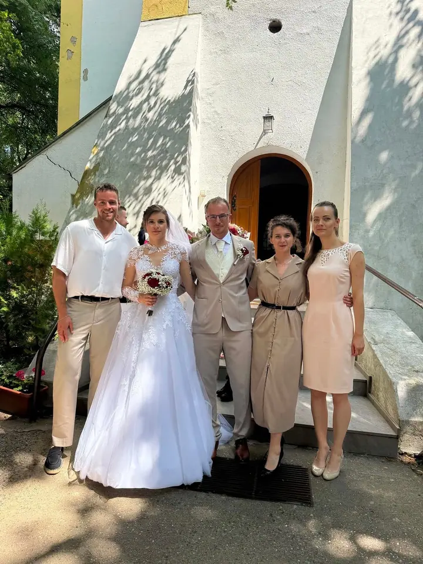
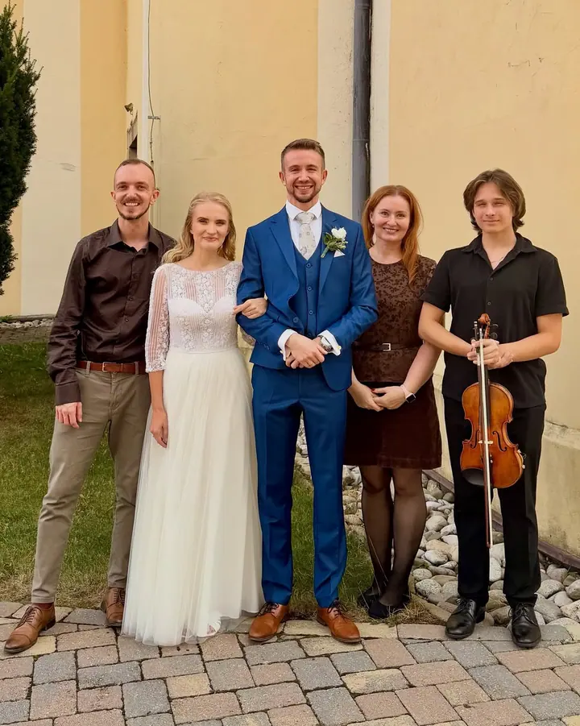
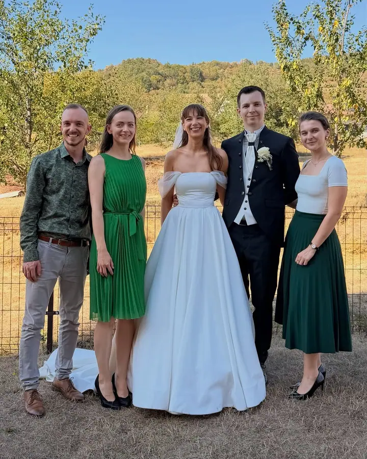
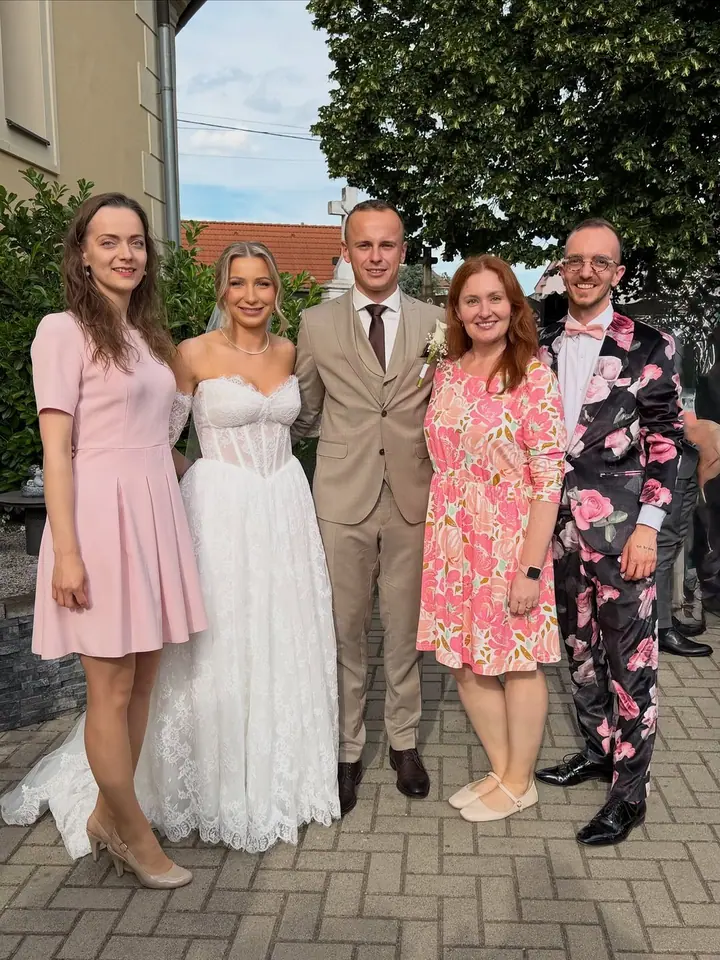
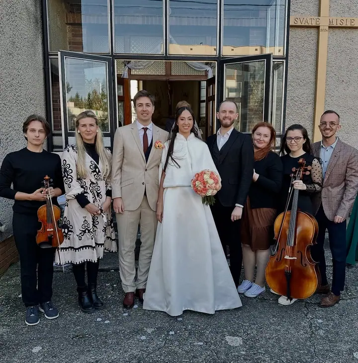
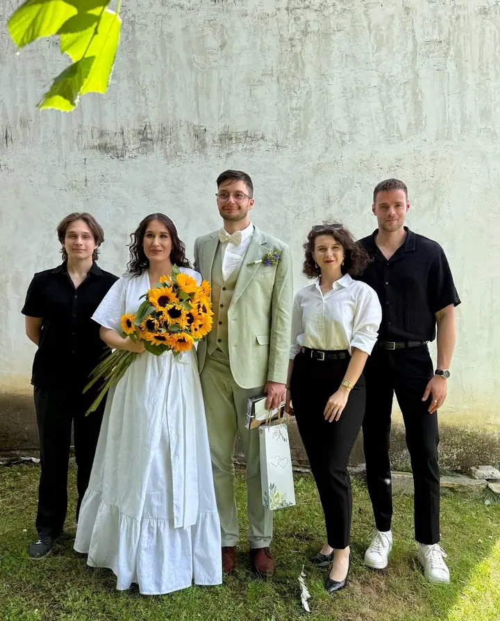

Zpěv na svatebním obřadu
Zpíváme na svatebních obřadech v kostele i v jiných prostorách. Chceme, aby byl váš obřad nezapomenutelný a aby hudba zaplnila celý prostor.





Jmenujeme se Svadobný zbor PS a zpíváme na svatebních obřadech v Bratislavě a do hodiny a půl cesty od ní. Hledáte originální a moderní sbor, který naplní hudbou celý kostel nebo jiný prostor? Rezervujte si nás.
Více o mně
„V našom zbore má každý svoju úlohu a miesto pre to, aby sme naplnili zvukom celý kostol (či iný priestor).“
— Svadobný zbor PS
Zpíváme na svatebních obřadech v kostele i v jiných prostorách. Chceme, aby byl váš obřad nezapomenutelný a aby hudba zaplnila celý prostor.
Na webu najdete ukázky písní, které na obřadech zpíváme nejčastěji. Máte vlastní oblíbenou píseň? Napište nám a připravíme ji v našem podání.
Zpíváme i mimo svatby. Každý rok pořádáme vánoční koncert Symfónia Vianoc, ve kterém se setkává divadlo s vánoční hudbou.
V našem sboru má každý svou úlohu a své místo. Díky tomu dokážeme zvukem naplnit celý kostel, ale i jiný prostor, kde si budete říkat své ano.
V roce 2022 jsme sbor o pár členů rozšířili, protože chceme hudbou naplnit ještě víc svatebních dní. Na webu najdete ukázky písní, které na obřadech zpíváme nejčastěji. Na většině obřadů se navíc snažíme natočit co nejvíc videa, abyste viděli, jak to vypadá, když je náš sbor u toho.
Mimo svatby máme vlastní každoroční tradici, vánoční koncert Symfónia Vianoc. V prosinci 2024 jsme v bratislavském Štúdiu L+S spojili divadelní umění talentovaných herců s vánoční hudbou v našem podání.
Do zprávy uveďte datum, místo obřadu (nejvýš 1,5 h od Bratislavy) a svoje další přání.
Poslechněte si ukázky písní na našem webu. Pokud máte vlastní oblíbenou píseň, rádi ji pro vás připravíme.
Přijedeme na místo a zazpíváme na vašem obřadu, ať je to kostel nebo jiný prostor.
Na většině obřadů se snažíme natočit co nejvíc videa, abyste si mohli celý zážitek připomenout.
Sídlíme v Bratislavě a zpíváme na místech nejvýš hodinu a půl cesty od ní.
Ano. Pokud máte oblíbenou píseň a chcete ji slyšet v našem podání, napište nám.
Na našem webu najdete ukázky nahrávek písní, které na obřadech zpíváme nejčastěji, i videa ze svateb.
Svatby jsou naše hlavní práce, ale rádi zazpíváme i při jiné příležitosti. Každý rok také pořádáme vánoční koncert Symfónia Vianoc.
info@svadobnyzborps.sk
Bratislava · do 1,5 h od Bratislavy